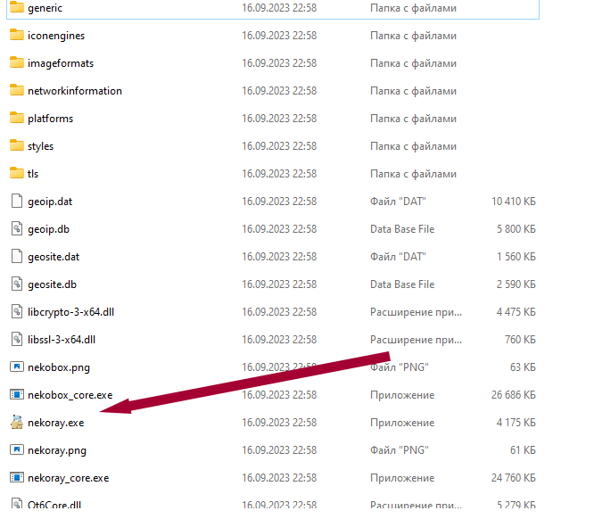
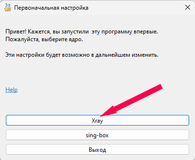
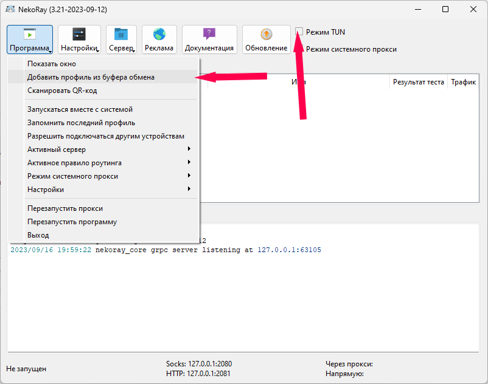
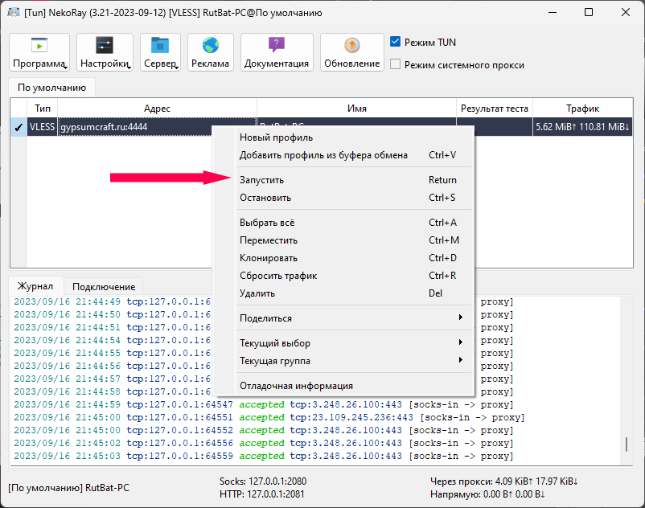

В связи с блокировками протоколов интернета пришлось перейти на самый защищенный протокол.
Его невозможно отследить и заблокировать. Он немного режет скорость, но зато будет работать.
Инструкция для Windows
Для установки программы на Windows, выполните следующие шаги:
- Скачайте архив с программой - NekoRay.
- Запустите клиент, следуя инструкциям на экране.Ключ доступа возьмите тут RutBat



